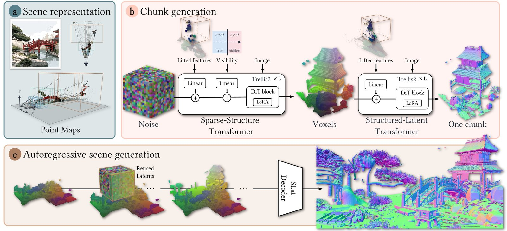

Interactive
Explore the reconstructions
Drag to orbit, scroll to zoom, WASD to move, QE down/up. Measure: pick two points to get their distance in metres.
Note: meshes are simplified to about 1.5M faces for this web viewer; the paper figures and videos use the full-resolution meshes.
Overview
An object generator, redesigned for whole scenes
- Adaptive scene chunks. Chunks grow with distance: small ones keep nearby detail, large ones cover distant buildings.
- Explicit 2D–3D conditioning. Image features are lifted onto the observed surface, and each voxel knows if it is free, visible, or hidden.
- Autoregressive generation. Neighbouring chunks reuse overlapping latents, so new geometry stays consistent with the scene.

Comparisons